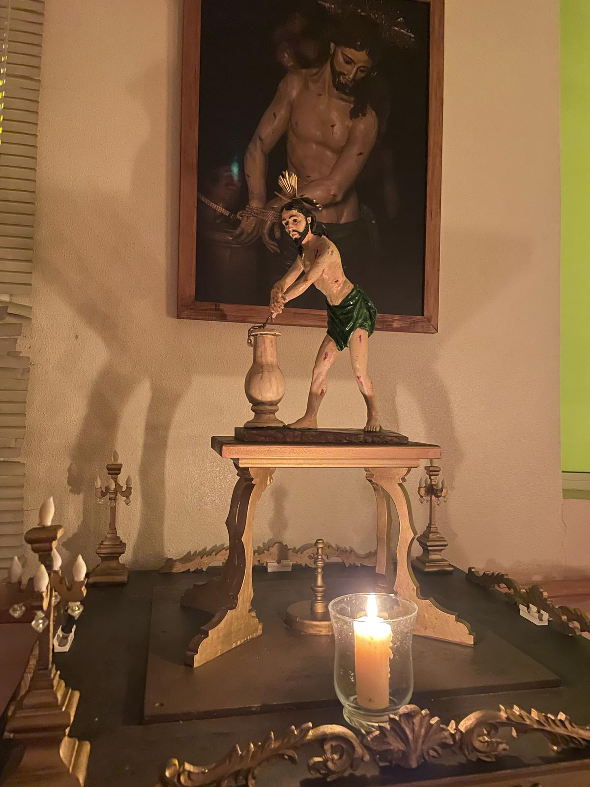
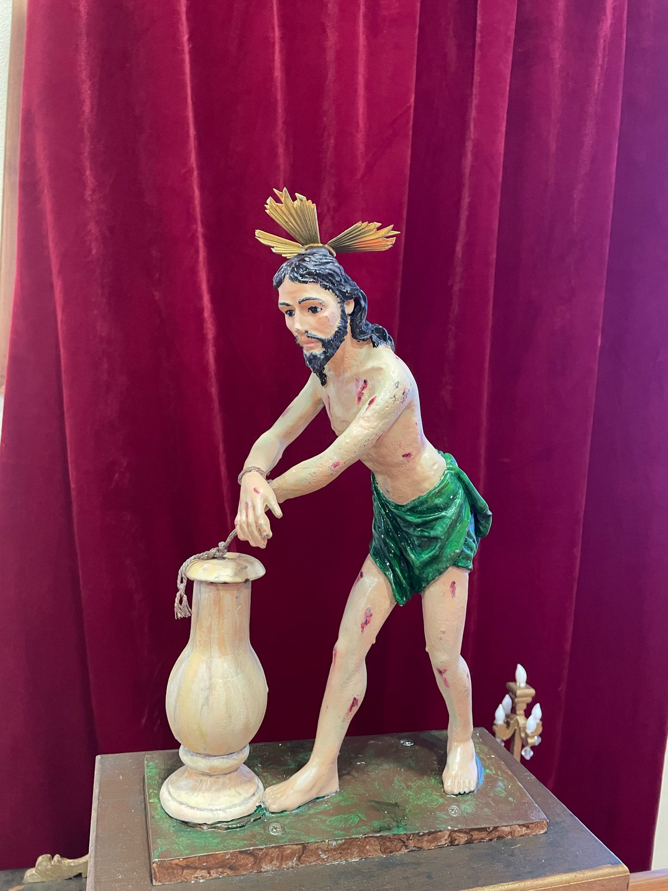
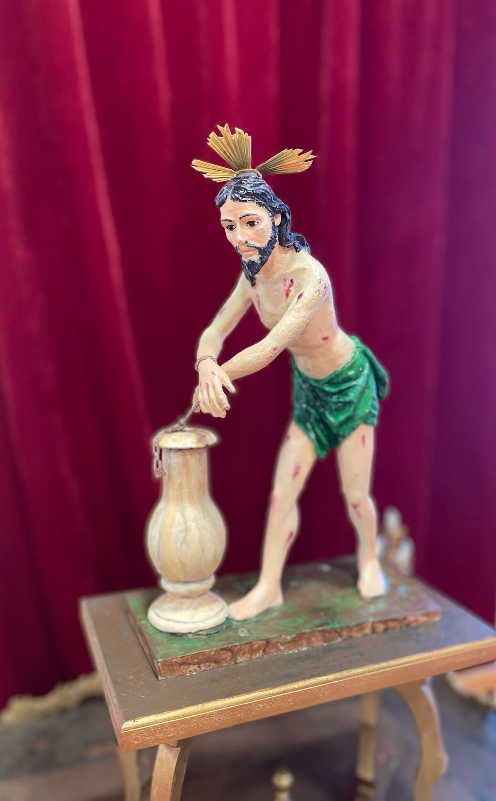

La Flagelación
La imagen de La Flagelación fue confeccionada en Beniaján y fue pintada por Josefa Muñoz López.
La imagen es una réplica de la imagen del trono de la Hermandad de La Flagelación de La Ñora.
El trono en el que procesiona tiene como autor a Pedro Muñoz Franco.
Es el paso infantil más pequeño y es portado por 4 niños estantes.
  